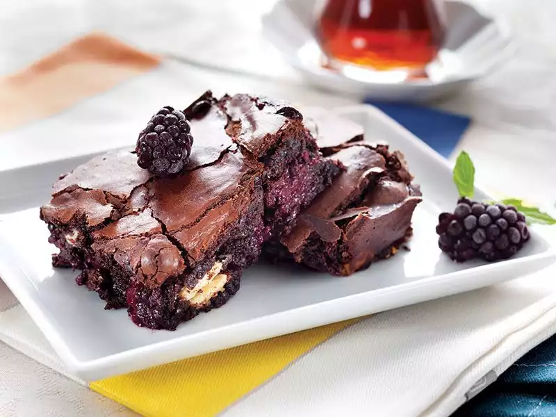

Çikolatalı Brownie Tarifi
Bu tarif, yoğun çikolata tadıyla ve yumuşak dokusuyla kendine hayran bırakan bir tatlıdır. İçindeki ceviz veya fındık parçalarıyla da lezzetine lezzet katar. Oldukça pratik ve kolay bir tarif olması sebebiyle, özellikle çikolata severler tarafından sıkça tercih edilen bir tatlıdır.

Kaç Kişilik:
5
|
Pişirme Süresi:
30 dakika
|
Hazırlama Süresi:
5 dakika
Malzemeler
- 200 gram bitter çikolata
- 200 gram tereyağı
- 3 adet yumurta
- 1 su bardağı toz şeker
- 1 su bardağı un
- 1 çay kaşığı tuz
- 1 su bardağı ceviz veya fındık parçaları (isteğe bağlı)
Yapılışı
- Çikolatayı benmari usulü eritin.
- Tereyağını küçük parçalar halinde ekleyerek karıştırın.
- Yumurtaları bir kaseye kırın ve çırpın. Toz şekeri ekleyerek çırpmaya devam edin.
- Çikolata karışımını yumurtalı karışıma ekleyin ve spatula yardımıyla karıştırın.
- Unu ve tuzu karıştırın ve çikolatalı karışıma yavaş yavaş ekleyin. Homojen bir karışım elde edene kadar spatula ile karıştırın.
- Ceviz veya fındık parçalarını ekleyin ve spatula ile karıştırın.
- Yağlanmış bir fırın kabına karışımı dökün ve önceden ısıtılmış 180 derece fırında yaklaşık 25-30 dakika pişirin.
- Fırından çıkarıp ılınması için 10-15 dakika bekletin. Daha sonra dilimleyerek servis yapın.
Tarif: Furkan Turan
Afiyet Olsun